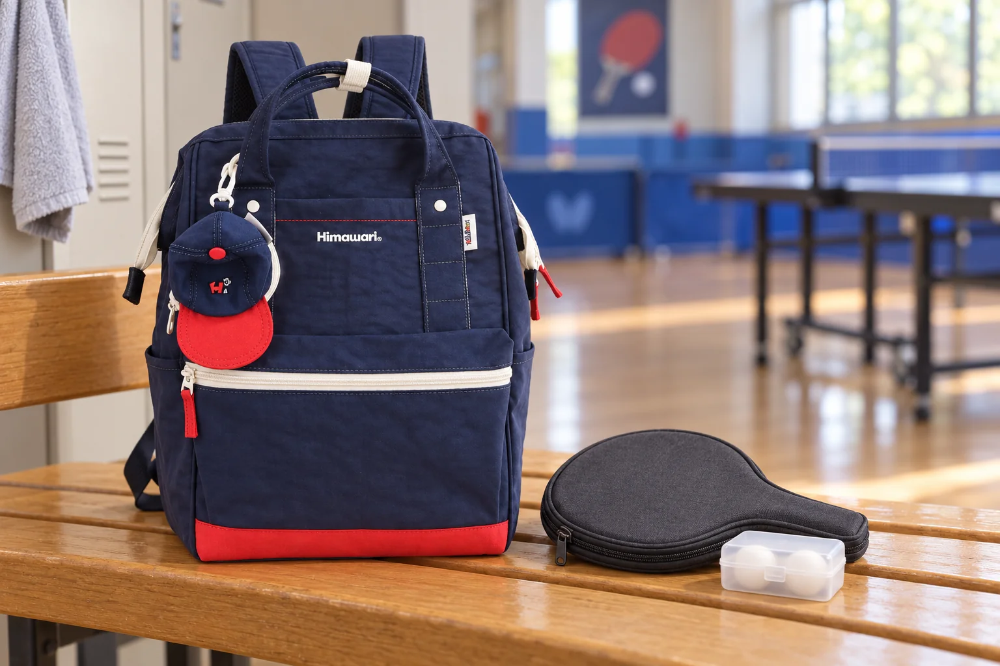

탁구 라켓을 챙길 때, 케이스까지 한 물건

평소 백팩에 탁구 라켓을 하나 더하려고 하면 납작한 면이 먼저 보입니다. 손잡이는 길게 남고 케이스의 모서리는 라켓과 다를 수 있습니다. 집에서 가방에 대볼 대상은 라켓만의 모양보다 실제로 가지고 나갈 묶음입니다. 라켓 보관 안내에 맞는 케이스에 넣고, 공과 필요한 소품을 나눈 뒤 탁구장에서 무엇을 꺼내둘지까지 생각해 봅니다.
라켓 면보다 닫힌 케이스를 기준으로
사용하는 케이스가 라켓 전체를 덮는지, 면만 덮고 손잡이를 남기는지 먼저 봅니다. 밖으로 나오는 부분이 있다면 그 길이도 포함해 가방 입구와 놓일 공간을 확인합니다. 케이스를 넣은 뒤 모서리나 손잡이가 여밈을 밀지 않는지 살펴봅니다. 라켓을 억지로 대각선으로 눌러 넣거나 가방 지퍼를 반쯤 열어둔 상태로 수납을 마쳤다고 판단하지 않습니다.
실제 짐을 넣기 전에 케이스만 놓아보면 어느 부분이 걸리는지 보기 쉽습니다. 그다음 평소 소지품과 함께 배치를 봅니다. 혼자 들어갔을 때의 공간과 책이나 파우치가 함께 있을 때의 공간이 같다고 기대하지 않습니다. 충전기나 열쇠 같은 단단한 물건이 한쪽을 누르는지 살펴보고 필요하면 별도 묶음의 위치를 바꿉니다. 라켓 면을 다른 물건의 받침으로 사용하는 배치도 다시 생각할 수 있습니다.
Himawari No.9007 네이비의 외부 크기는 28 × 40 × 17cm로 안내되어 있습니다. 라켓 케이스를 담을지 고르는 상황에서는 이 숫자가 내부 칸 크기와 다르다는 점이 실제 결정에 영향을 줍니다. 자기 케이스를 닫은 상태로 입구와 안쪽을 확인하고 정상적으로 여밀 수 있는지 봅니다. 준비한 케이스가 무리 없이 들어가지 않는다면 따로 들고 이동하는 방법도 고를 수 있습니다.

케이스를 따로 이동시키기로 했다면 실제 소지품을 들고 움직일 구성을 정합니다. 백팩 끈에 임의로 걸어 늘어뜨리기보다 라켓 케이스의 원래 이동 방식을 확인합니다. 손에 든 물건이 더해지면 출입구나 짐 보관 자리를 이용할 때 무엇을 먼저 내려놓을지도 생각할 수 있습니다. 같은 모임에 갈 때마다 모든 짐을 하나의 가방에 넣어야 한다는 기준으로 준비할 필요는 없습니다.
공은 정한 보관함에서 꺼낸다
탁구공은 닫히는 별도 보관함에 모아둘 수 있습니다. 라켓 케이스의 빈틈에 넣고 싶다면 원래 공을 두는 자리인지 먼저 봅니다. 공을 사이에 끼워 넣은 뒤 케이스를 눌러 닫는 방식보다 자연스럽게 정리할 구성을 고릅니다. 보관함을 열었을 때 가져간 공의 개수를 알 수 있으면 사용 뒤 자기 소품을 회수할 때도 대조할 수 있습니다.
모임에서 공을 함께 쓰거나 빌린 공이 있다면 회수 약속을 확인합니다. 자기 공과 모임의 공을 구별할 필요가 있는지, 끝난 뒤 어느 보관함으로 돌려놓는지 함께 정하면 됩니다. 표기를 새로 하려면 공의 사용 방식과 모임 안내도 참고합니다. 모든 공을 자기 보관함으로 가져오는 대신 원래 주인이 정한 자리로 돌아가는 순서를 확인하는 것입니다. 라켓을 정리하는 시간과 공을 회수하는 시간을 나눠두면 빠뜨린 소품을 찾기 쉽습니다.
운동에 사용할 다른 소품이 있다면 탁구장에 가져가야 하는지부터 고릅니다. 평소 쓰는 물건과 운동 자리에서 꺼낼 물건을 나누면 필요할 때 전체 가방을 펼칠 부담이 줄어듭니다. 갈아입을 옷이나 사용한 수건의 보관도 라켓 케이스와 별도 묶음으로 정할 수 있습니다. 각 물건이 같은 활동에 쓰인다고 해서 같은 상태로 보관할 필요는 없습니다.
탁구대 옆에 놓을 물건과 남겨둘 짐
도착하면 개인 짐을 둘 수 있는 안내된 위치부터 확인합니다. 통로나 탁구대 주변에 백팩과 케이스를 늘어놓기보다 사용할 라켓과 공을 꺼낸 뒤 나머지는 정한 자리에 둡니다. 케이스를 어디에 두었는지도 함께 기억합니다. 여러 참가자가 비슷한 케이스를 쓰는 경우에는 자기 것과 구별할 정보가 있는지 출발 전에 확인해둘 수 있습니다.
잠깐 쉬는 시간에는 라켓을 임의의 바닥이나 짐 사이에 넣기보다 사용하는 라켓의 관리 안내에 맞는 자리를 고릅니다. 공을 다시 보관함에 넣었다면 다음 게임을 시작할 때 같은 위치에서 꺼낼 수 있습니다. 자리를 바꾸거나 다른 탁구대로 이동할 때에는 개인 짐을 그대로 두어도 되는지 공간의 안내를 확인합니다. 필요한 물건을 먼저 정해두면 이동할 때 확인할 묶음도 줄어듭니다.
게임을 마친 뒤에는 라켓과 공을 각각 회수하고 사용 안내에 맞춰 정리합니다. 라켓 표면의 관리가 필요하다면 제품에 맞는 방법을 확인합니다. 익숙하지 않은 재료나 다른 사람의 도구를 쓰는 상황에서는 자신의 라켓에 같은 방법이 맞는지 먼저 봅니다. 오늘 사용한 소품을 다시 케이스에 담은 뒤 자연스럽게 닫히는지 확인하고, 젖은 옷이나 수건은 정한 별도 자리에 둡니다.
돌아갈 때에는 라켓 케이스가 출발할 때와 같은 상태로 정리되어 있는지 봅니다. 공을 더 받았거나 다른 소품이 추가되었다면 가방 안의 배치도 다시 확인합니다. 남는 자리에 모두 넣는 일을 먼저 결정하지 않고 각각의 보관 조건과 사용할 위치를 기준으로 나눕니다. 빌린 물건을 돌려줬는지, 자기 보관함에 빠진 것이 없는지 탁구장 자리에서 확인하면 집에서 다시 찾으러 돌아갈 부담을 줄일 수 있습니다.
다음 모임 준비를 위해 오늘 불편했던 동작을 짧게 남길 수 있습니다. 케이스를 꺼내기 어려웠는지, 공을 회수할 자리가 없었는지처럼 실제로 조정할 항목을 고릅니다. 새 가방이나 소품을 바로 늘리기 전에 케이스 위치와 꺼낼 순서를 바꿔보는 방법도 있습니다. 집에 돌아와 라켓을 안내에 맞는 보관 위치로 옮기고 공 보관함을 정리하면 다음 운동을 위한 묶음이 다시 준비됩니다.